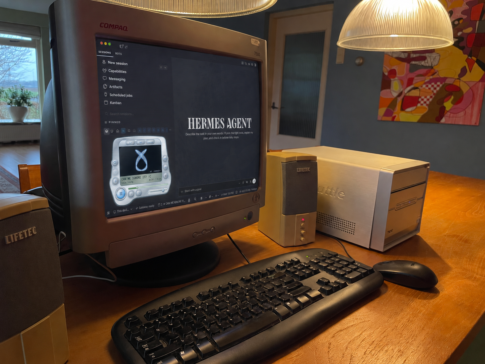

HERMES / SPOTIFY PLAYER
RETRO EDITION — 1.3
Good work.
Great music.

THE SOUNDTRACK STAYS WITH THE SESSION.
USER-CREATED CONCEPT ART
Spotify, inside Hermes.
Native controls. A little nostalgia.
PLAY / PAUSE / SEEK / VOLUME
OPEN SOURCE · macOS
BY JANESTREETSHILLER